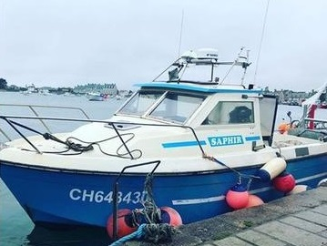

Nos deux bateaux, le Corto-Maltese & le Saphir ainsi que le bateau de Jérome, De La Brise, assurent 70% de nos produits proposés à la livraison, sur Paris et petite couronne.
Nous ne pêchons que des poissons de saison, de manière douce et surtout en garantissant une qualité de poissons irréprochable.